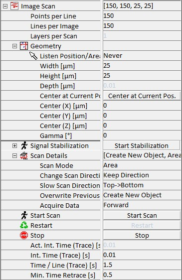

|
图像扫描
|
在图像扫描参数组中，可以定义采集二维或三维数据集所需的所有参数。在此参数组中可调整扫描几何形状或扫描速度等参数。
更多信息（操作指南）：

开始扫描
按下此按钮使用当前输入的参数开始扫描和数据采集。
重新开始
此触发按钮使扫描使用当前输入的参数重新开始。
WITec Control 允许在扫描过程中更改图像扫描参数组中的大多数参数。这允许在扫描时优化扫描参数。
当前采集的数据集的数据将丢失。
每线点数
此参数允许用户更改每线的像素、数据点或光谱数量。
每图像线数
每图像线数允许用户选择在选择扫描区域（见下文）内扫描的线数。
每扫描层数
此参数定义在堆栈扫描（仅共聚焦模式）中记录多少层。对其他模式无影响。
几何形状
几何形状参数组允许选择所需的扫描区域，坐标在内部坐标系中给出（见图 3.2）。由于扫描台执行移动，可选几何形状受扫描台的扫描范围限制。可调整以下参数：
监听 位置/区域
单击图像中的位置后，单击的位置将被标记为扫描的新中心位置，或者允许选择所需的扫描区域或深度扫描线。
宽度 [µm]
宽度设置矩形扫描的尺寸。它始终是快速扫描方向的尺寸（一条线的长度）。
高度 [µm]
高度始终是矩形扫描的慢速扫描方向尺寸（矩形的高度）。如果执行深度扫描，此参数无效。
深度 [µm]
深度参数不仅与宽度结合用于深度扫描，还与宽度和高度结合用于堆栈扫描。在深度扫描中，它是慢速扫描方向的尺寸；在堆栈扫描中，它是从最上层到最下层扫描的距离。
中心位于当前位置
单击此按钮将内部坐标系中的当前坐标复制到扫描中心位置的相应字段中。
中心 (X/Y/Z) [µm]
扫描将围绕其执行的 X、Y 和 Z 中心位置坐标。
Alpha [°]
Alpha 标识扫描区域绕 X 轴的旋转，相对于 Y 轴测量。
Beta [°]
Beta 标识扫描区域绕 Y 轴的旋转，相对于 X 轴测量。
Gamma [°]
Gamma 标识扫描区域绕 Z 轴的旋转，相对于 X 轴测量。
为其中一个角度输入正值将使扫描沿数学正方向旋转。然而，由于记录设备（如 AFM 探针）保持静止，生成的图像将显示为沿数学负方向旋转。对于使用旋转扫描确定扫描区域的位置，首先应用绕 X 轴的旋转。然后绕 Y 轴的旋转相对于旋转后的平面执行。最后，再次在旋转/倾斜的平面内执行绕 Z 的旋转。
信号稳定
请参阅 信号稳定 部分。
扫描模式
使用此参数，可以从以下选项中选择扫描模式。
区域
使用此选项，在通过角度 Alpha、Beta 和 Gamma 定义的平面（如果 Alpha = Beta = 0°，通常为 X-Y 平面）上执行单次扫描，使用输入的宽度和高度。扫描台将在扫描完成后保持在最终位置。
区域循环
在此模式下，扫描将像单次设置一样执行。但是，完成后将使用完全相同的设置自动重复。更改扫描方向和覆盖前一次（见下文）是定义此扫描模式行为的附加参数。
深度
使用此选项，在通过角度 Alpha、Beta 和 Gamma 定义的平面（如果 Alpha = Gamma = 0°，通常为 X-Z 平面）的垂直方向上执行单次深度扫描，使用输入的宽度和深度。扫描台将在扫描完成后保持在最终位置。
深度循环
在此模式下，扫描将像深度设置一样执行。但是，完成后将使用完全相同的设置自动重复。更改扫描方向和覆盖前一次（见下文）是定义此扫描模式行为的附加参数。
堆栈
堆栈扫描是在不同深度执行的单次扫描的集合。执行的扫描次数取决于每扫描层数参数，不同深度级别取决于每扫描层数和深度参数的组合。各个扫描自动以递增数字标记。
更改扫描方向
此参数对循环或堆栈扫描有效，具有以下选项：
保持方向
在此设置中，每次扫描将从慢速扫描方向定义的方向开始。
交替
此设置将使慢速扫描方向在每次扫描时交替。因此，如果从扫描区域的左上角开始的扫描已完成，下一次扫描将从左下角开始。
慢速扫描方向
此参数设置扫描方向。
覆盖前一次
此参数对连续或堆栈扫描有效，可以设置为创建新对象和覆盖。如果选择创建新对象，每次扫描将创建新的数据对象。如果选择覆盖选项，第二次扫描将覆盖第一次。
速度定义方式
此参数可以设置为积分时间或每线时间。这两个参数都可以输入，描述为
[每线时间] = [积分时间] * [每线点数]
速度定义方式确定在更改每线点数参数时哪个变量保持不变。
实际积分时间（正向）[s]
只读值，显示测量开始后 CCD 相机调整的周期时间（积分时间 + 读出时间）。
积分时间（正向）[s]
正向扫描方向的积分时间定义了一个像素、数据点或光谱的时间。更改此时间将自动更改每线时间（正向）[s] 参数。
积分时间（回扫）[s]
反向扫描方向的积分时间也定义了一个像素、数据点或光谱的时间。如果在此扫描方向不记录数据，此时间基本上定义了扫描台的向后运动速度。更改此时间将自动更改每线时间（回扫）[s] 参数。
每线时间（正向）[s]
可在此处更改正向扫描一行所需的时间。更改此参数将自动更改积分时间（正向）[s] 参数。
每线时间（回扫）[s]
可在此处更改反向扫描一行所需的时间。更改此参数将自动更改积分时间（回扫）[s] 参数。
如果在反向不记录数据，此时间可以显著缩短。然而，如果时间选择太短，样品可能因转向时的冲击而移动，如果样品未正确固定的话。
最小回扫时间 [s]
此参数定义反向一行的时间，如果不记录数据且其值小于正向所需每线时间。
采集数据
此参数确定是仅在正向扫描方向记录数据，还是在正向和反向两个扫描方向都记录数据。
保存 PFM 数据
如果激活，DPFM 曲线（T-B 信号）将保存到单独的文件。单击开始扫描后，软件将提示文件位置。
PFM 文件名
显示保存 DPFM 曲线的路径。
前/后像素
此参数定义每条线前后将输出多少个像素触发。如果某些外部设备通过 alphaControl 触发，这可能是必要的。
慢速转向 [%]
慢速转向减少由扫描台方向变化引起的冲击。如果激活慢速转向，扫描台将在最终扫描速度下加速，并在转向时从最终扫描速度减速。此加速距离可以使用此参数更改。此百分比参考扫描宽度，该距离的一半将用于扫描线的每一侧。WITec Control 自动设置此参数，取决于测量模式。
线性超扫描 [%]
线性超扫描是扫描宽度的延伸，与 alphaControl 中实现的 TrueScan 模式结合使用。此百分比参考扫描宽度，该距离的一半将用于扫描线的每一侧。WITec Control 自动设置此参数，取决于测量模式。
信号路由
触发 1/2/3 输出
触发输出可以设置为像素时钟或行时钟。